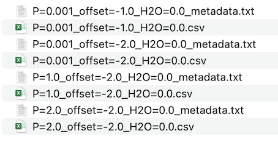

Basic Usage
Simply put, MAGEMinEnsemble provides an interface to define a parameter space over which many MAGEMin simulations can be performed. It does this using two ordered dictionaries: constant_inputs and variable_inputs. As their names suggest, keys in constant_inputs assign the intensive variables that do not change across the ensemble of simulations. The keys in variable_inputs assign intensive variables that change across the ensemble.
Intensive variables are assigned using key-value pairs, where the key is always a string. constant_inputs contains values that are single floats or strings. variable_inputs contains values that are vectors of floats or strings. The same key cannot be assigned in both constant_inputs and variable_inputs: a parameter cannot be defined as both constant and variable in the same simulation.
The below example shows how the key and values of constant_inputs and variable_inputs can be assigned. These will define an ensemble of simulations over variable pressure, water and oxygen fugacity space. For a description of the available intensive variables, see section Intensive Variables.
# Assign a constant temperature range, bulk composition and oxygen fugacity buffer
constant_inputs = OrderedDict(
# Set the initial, final and incremental
# temperature in degrees celsius
"T_start" => 1400.,
"T_stop" => 800.,
"T_step" => -1.,
# Set bulk composition oxides in wt.% oxide
"SiO2" => 44.66,
"TiO2" => 1.42,
"Al2O3" => 15.90,
"Cr2O3" => 0.00,
"FeO" => 11.41,
"Fe2O3" => 6.00,
"MgO" => 7.79,
"CaO" => 11.24,
"Na2O" => 2.74,
"K2O" => 0.22,
# Set constant oxygen fugacity buffer
"buffer" => "qfm"
)
# Assign variable pressure, oxygen fugacity buffer offset and water content
variable_inputs = OrderedDict(
# Set variable pressure between 0.0 and 5.0 kbar in increments of 1.0
"P" => collect(range(start=0.0, stop=5.0, step=1.0)),
# Set variable oxygen fugacity buffer offset from
# QFM-2.0 to QFM+2.0 in increments of 1.0 log units
"offset" => [-2.0, -1.0, 0.0, 1.0, 2.0],
# Set variable water content from 0.0 to 8.0 wt%
#in increments of 1.0
"H2O" => collect(range(start=0.0, stop=8.0, step=1.0))
)
# Run the simulations, store result in variable Output
Output = GenerateEnsemble.run_simulations(
constant_inputs,
variable_inputs,
bulk_frac="frac"
)The constant_inputs and variable_inputs are passed to the run_simulations() function to generate and run the ensemble. The bulk_frac argument can be either "bulk" or "frac" to indicate bulk or fractional crystallisation. The results will be saved as appropriately named .csv files. For this ensemble, they will have the form "P=X_offset=Y_H2O=Z.csv", where X, Y and Z refer to the combination of values in variable_inputs. The .csv files will be accompanied by metadata.txt files.

To allow for further processing in Julia, the results are also stored in the variable Output.